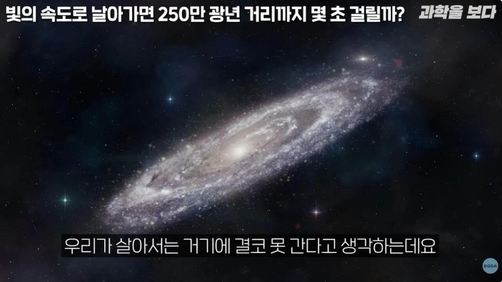

뭔말이야??

뭔말이야??
내 빚도 빛에 속도로 늘어나던데
키자루는 대단하구나
빛의 속도로 차여볼래!?
빛의속도면 질량은 곧 에너지가되어 걍 죽었음청년 되는건데 시간이 무의미해지는거아님?
간략하게 설명하면 속도가 빠를수록 거리는 수축하고 시간은 팽창함.
엄청 빠르게 이동한다면 정지상태에서 100m 앞에 있던게 1m 앞까지 올 수있다라는거임. 말 그대로 거리가 수축함.
근데 속도가 무한적 빨라지냐. 아님. 빛의 속도를 넘을 수 없음.
질량을 가진 물체가 빛의 속도에 매우 근접하게 되면 질량이 매우 커짐. 따라서 질량을 가진 물체는 빛의 속도를 능가할 수 없음.
본문에서 말한 광년은 정지한 관찰자가 특정 거리를 빛의 속도로 나누었을 때 구해지는 시간임.
근데 빛의 속도로 움직인다라면 기존의 정지한 관찰자가 속한 관성계가 아님.
결론의 빛의 입장에서 보면 거리수축이 극단적이여서 0초와 마찬가지임.
뭔소리야 싯팔 빛의 속도는 항상 똑같아야 하니까 측정하는 주체에 따라 거리가 짧게 측정되고 그것때문에 시간이 느리게 가기라도 한단말이냐
아, 그렇구나